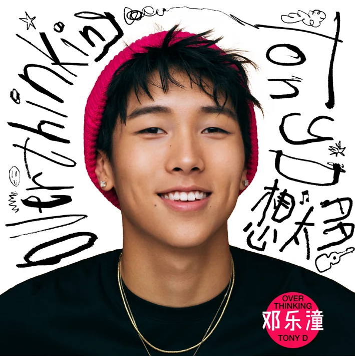
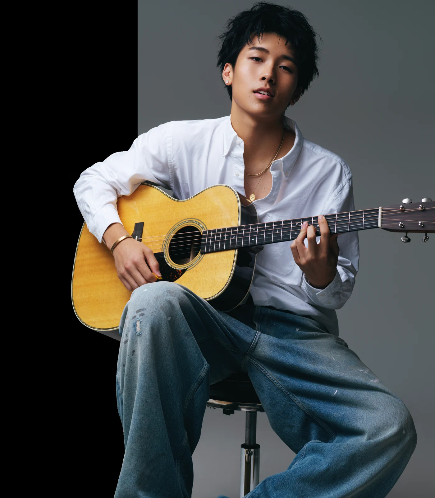
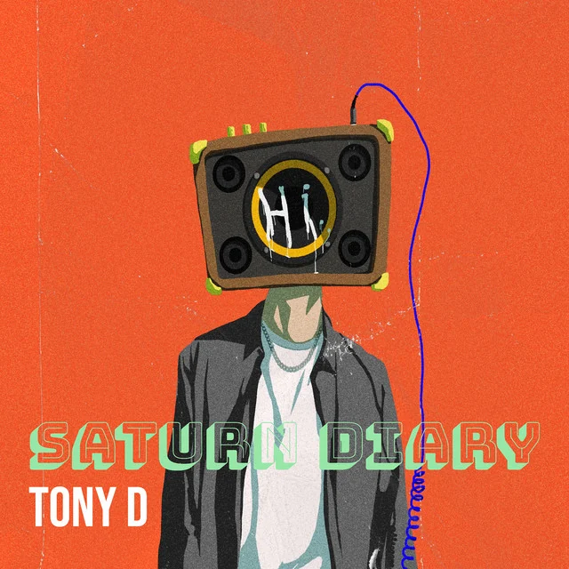
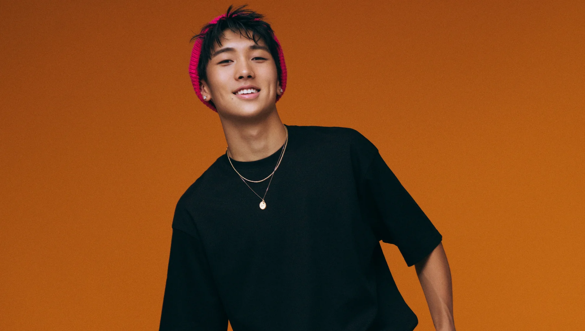
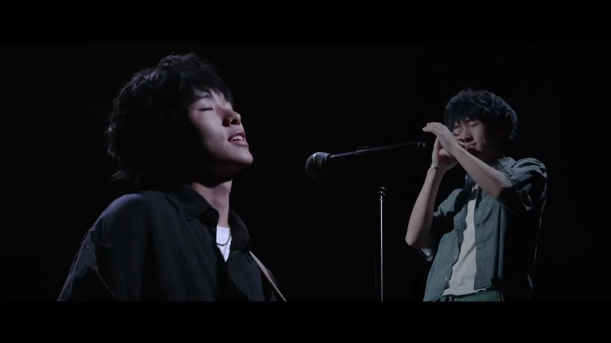
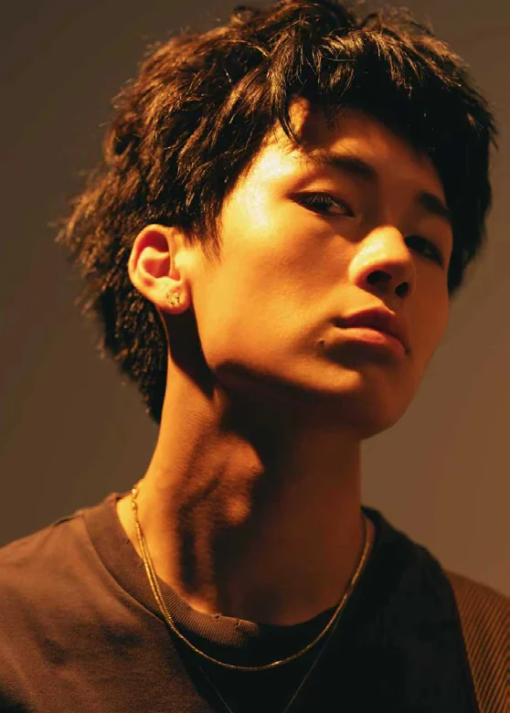
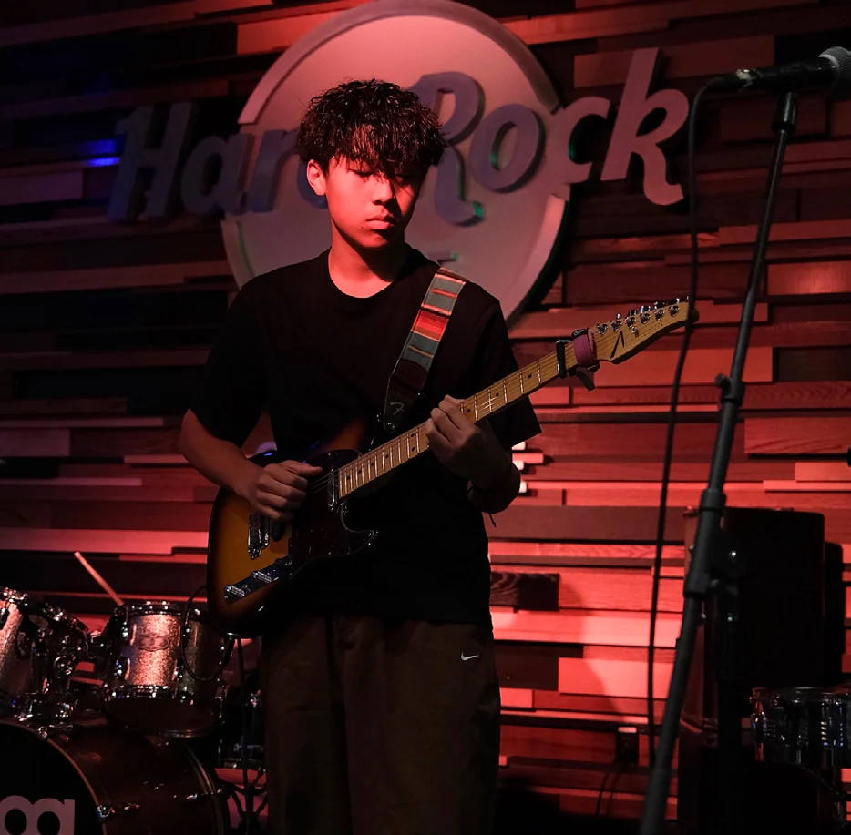
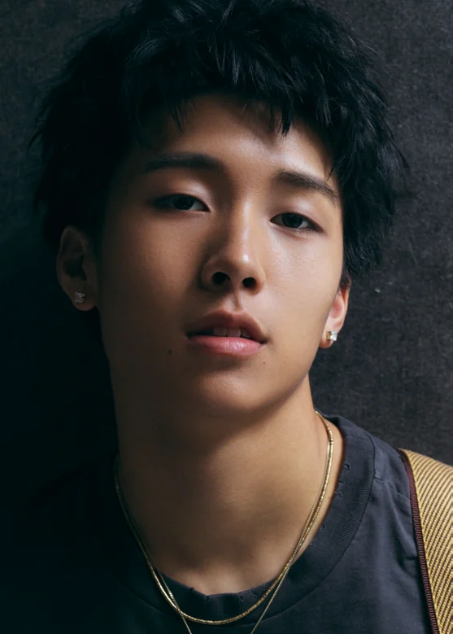

NewOverthinking 想太多
Seven tracks — six English, one Mandarin. A more refined sound and layered arrangements.

Signed Writer · Universal Music Publishing Group

Singer-songwriter and guitarist from Seattle. Indie rock, britpop, soul. Second album Overthinking out now via Universal Music Group.
Two albums. Every track written, composed and performed by Tony.

NewSeven tracks — six English, one Mandarin. A more refined sound and layered arrangements.

The debut record — written between the ages of thirteen and fifteen.

HER · Look in the Mirror · I Do · Curiosity · If It’s True · Time Will Speak · Oh, Mother
Original songs, shot and cut for the channel. Press one and the player loads in place — nothing from YouTube runs until you do.

Jinan to Beijing to New York to Seattle — and a home studio the whole way through.



Tony Deng was born in Jinan, Shandong in 2007 and spent his early childhood between Jinan and Beijing before moving to New York at nine. He now lives in Seattle, and is in the Class of 2026 at Newport High School, Bellevue.
He grew up inside a home studio built and run by his father — a producer, recording and mixing engineer, and formerly a lead guitarist and songwriter himself. Instruments and recording gear were simply what the house was made of. Tony studied piano, guzheng, violin and cello, but guitar has always been the one. He has perfect pitch, which his father discovered when Tony restrung a guitar and tuned it accurately without a tuner.
He started writing in 2019, during the pandemic, when school stopped and there was little to do but practise. On Mother’s Day at thirteen he decided to write his mum a song; two hours later the lyrics, the music and the demo were done. It was about her rules, his frustrations, and a deal to trade the song for two pairs of basketball shoes. Most of his songs start somewhere that ordinary.
Music is how I often express myself.
At thirteen he became lead guitarist of the House Band at School of Rock in the Seattle area, playing venues including the Hard Rock Café, and was admitted to Berklee College of Music’s Guitar Summer Program as a middle school student — returning three years running. In May 2025 he signed an exclusive global publishing deal with UMPG, and that October released Overthinking worldwide through Universal Music Group.
Five years, from a first single to a global release.
Coverage and commentary, mostly on Weibo and in Chinese.
For inquiries, licensing and collaboration.
zhangmin9@hotmail.comManagement — Ms. Zhang